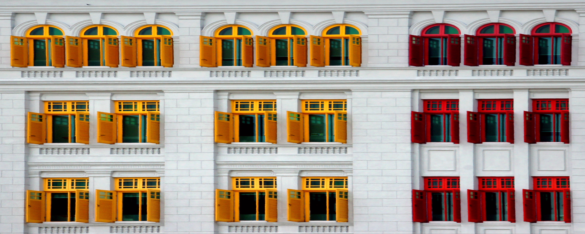
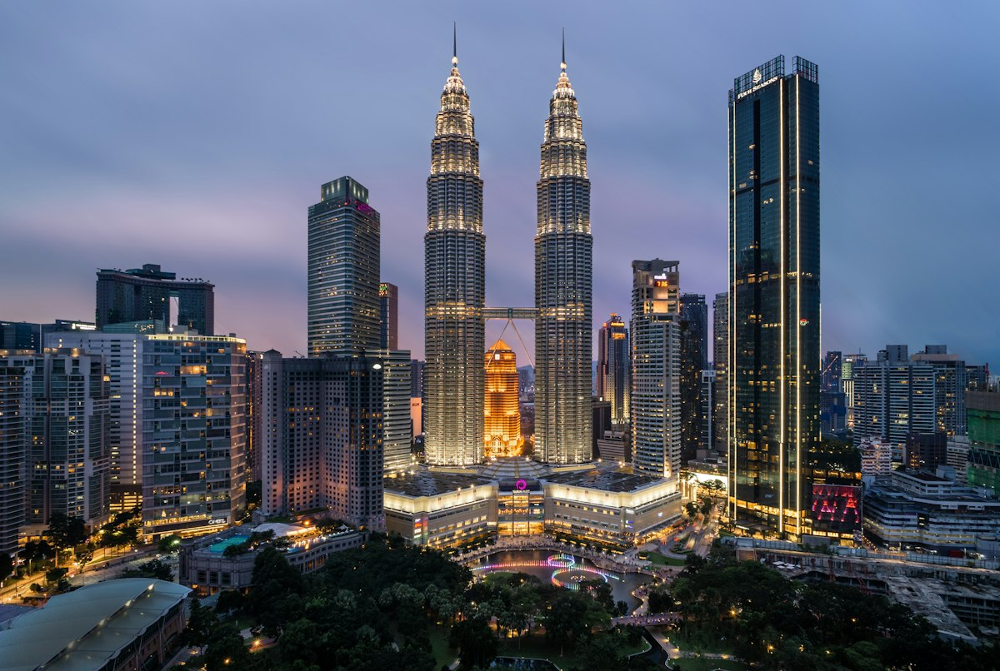
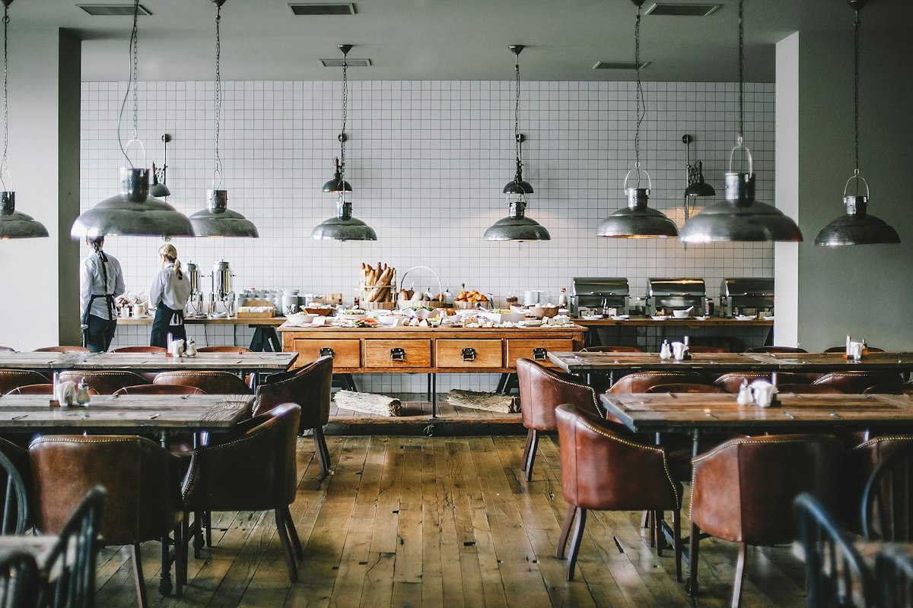
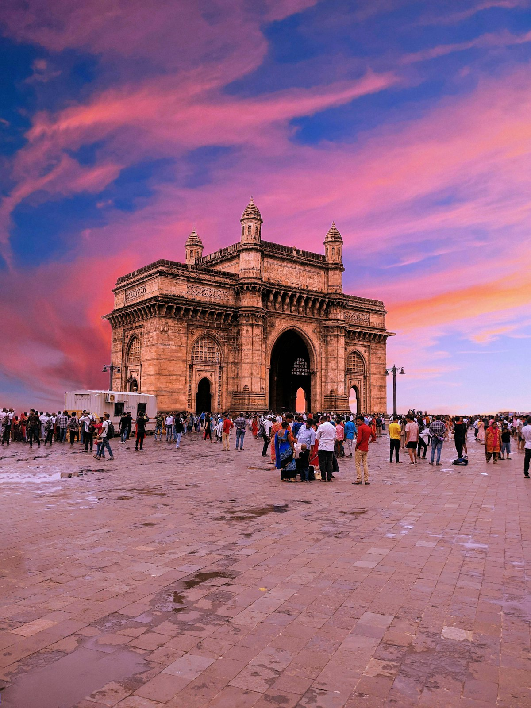
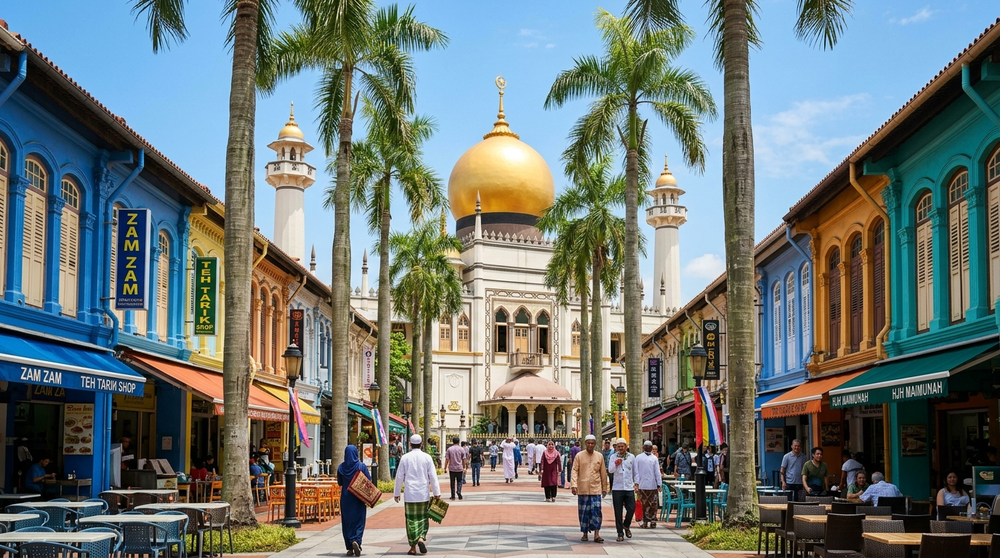
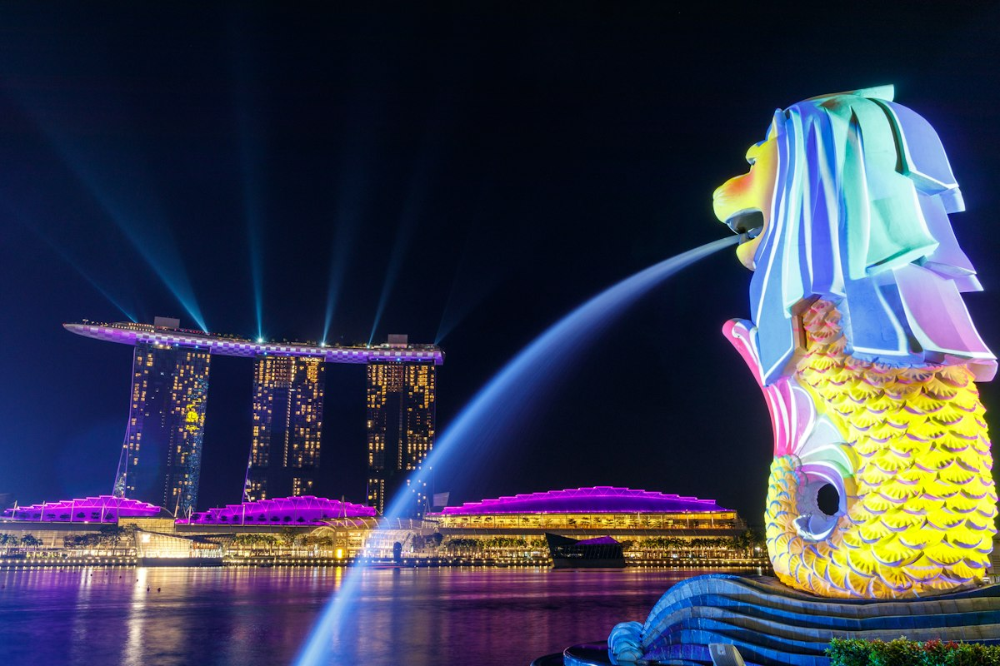
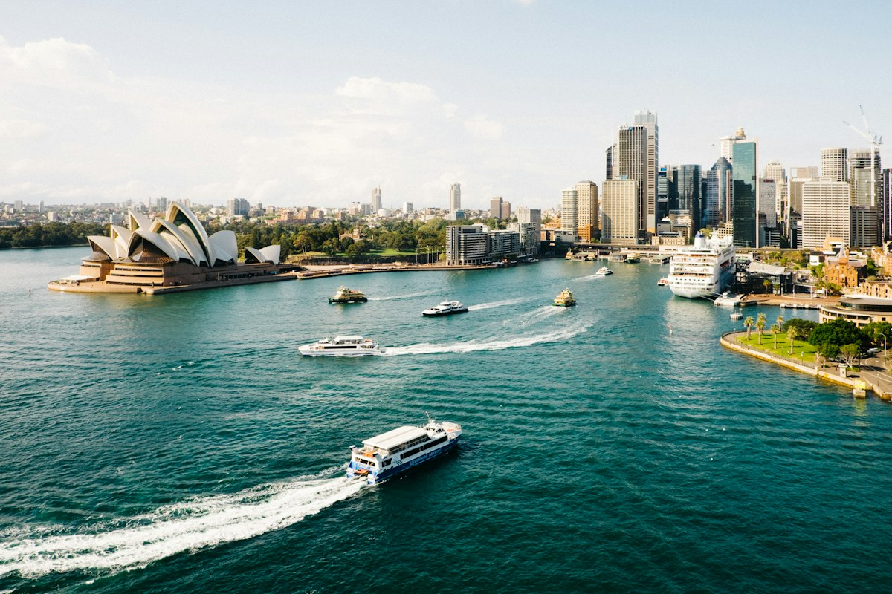
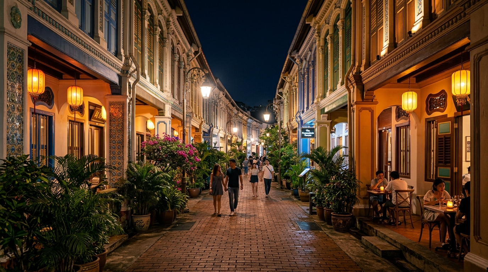
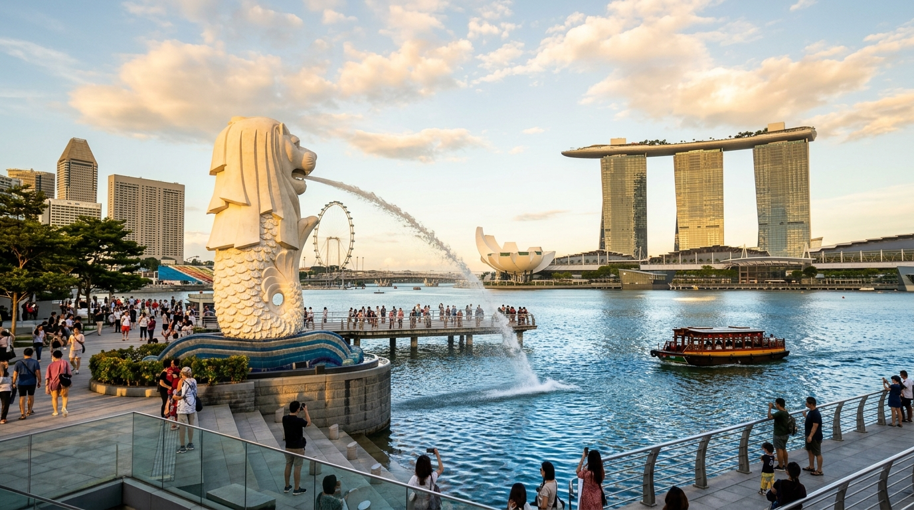
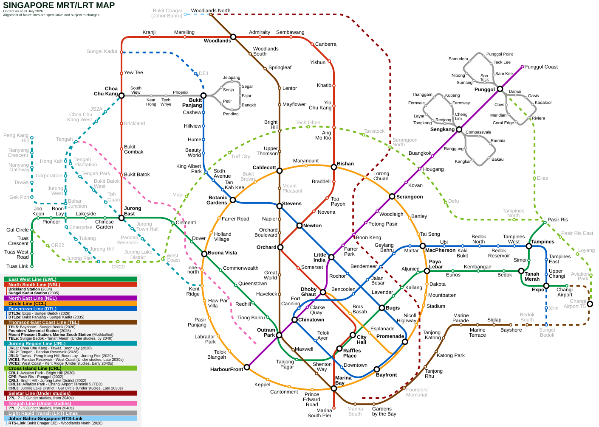

Krisna Bhakti N.
Konsinyering RMU LRT Batam & Benchmarking SMRT Singapore
- Akomodasi Hotel
- Hotel Chancellor@Orchard (28 Cavenagh Rd)
- Hub Stasiun Terdekat
- Somerset MRT (450m) • Dhoby Ghaut (650m)
- Batas Bagasi Citilink
- Check-in 10 kg maks • Kabin 7 kg
- Kontak EO Rombongan
- Firman: +62 877-8618-4800
Kumpul di Kantor LRT Jabodebek
Absensi rombongan peserta LRT Jabodebek & KAI Services. Pastikan KTP, Paspor asli, dan kemeja batik resmi siap di tas kabin.
Bandara Soekarno Hatta (Terminal 1C)
Drop bagasi pesawat Citilink (Maks 10 kg). Powerbank wajib di tas kabin. Penerbangan menuju Batam pukul 05:15 WIB.
Meeting Konsinyering Pembahasan di Batam
Evaluasi pekerjaan 2026 & persiapan pekerjaan 2027 setelah sarapan di Morning Bakery. Sesi dokumentasi resmi mewajibkan kemeja batik.
Penyeberangan Ferry ke Singapore
Pelabuhan Batam Center menuju Singapura. Pemeriksaan paspor & barcode MyICA Mobile. Rokok & vape dilarang keras! Jam Singapura maju 1 jam (GMT+8).
Merlion Park & Pertunjukan Spectra Marina Bay Sands
City tour sore di Merlion, makan malam bersama, dan menyaksikan pertunjukan air mancur & laser Spectra MBS di malam hari.
Check-in Hotel Chancellor & Pilihan Free Time
Setelah taruh koper di hotel (28 Cavenagh Rd), pilih aktivitas malam sesuai kondisi fisik Anda:
Jalan kaki 5 menit ke Emerald Hill (gang rumah antik Peranakan dengan lentera temaram syahdu). Lanjut ke Don Don Donki Orchard Central (buka 24 jam) untuk jajan snack/minuman khas Jepang.
Spot Wajib & Hits Singapura
Daftar destinasi paling populer, spot foto viral TikTok/Instagram, dan kuliner legendaris yang wajib dikunjungi berdasarkan kurasi itinerary 3D2N para traveler dunia di internet. Sangat pas untuk mengisi waktu luang (Free Time) Anda di Singapura!

📸 927 RAINBOW WINDOWSOld Hill Street Police Station
Bangunan bersejarah tahun 1934 dengan 927 daun jendela bergradasi warna-warni pelangi. Spot foto OOTD paling hits dan estetik di Singapura.

🎨 MURAL STREET ARTHaji Lane (Lorong Seni & Kafe Indie)
Lorong sempit artistik penuh mural grafiti internasional, butik pakaian desainer lokal, toko kamera jadul, dan kafe hipster. Hanya 2 menit jalan kaki dari Masjid Sultan.

🧬 DNA SPIRAL ARCHITECTUREThe Helix Bridge Marina Bay
Jembatan pejalan kaki spiral ganda DNA melengkung pertama di dunia. Menyajikan 4 pod viewing balkon kaca menjorok ke teluk untuk panorama Marina Bay Sands spektakuler.

🏮 TANG DYNASTY HERITAGEBuddha Tooth Relic Temple & Chinatown
Kuil stupa emas 4 lantai bergaya arsitektur Dinasti Tang di tengah Chinatown. Di sekitarnya terdapat pasar jalanan Pagoda Street penuh lampion merah dan cenderamata khas.
Maxwell Hawker & Tian Tian Chicken Rice
Nasi ayam Hainan paling tersohor di dunia yang dipuji Anthony Bourdain. Nasi gurih berkaldu wangi disajikan dengan irisan ayam lembut juicy dan sambal jahe segar otentik.

🥘 100% HALAL SEJAK 1908Singapore Zam Zam Restaurant (Murtabak)
Restoran India-Muslim legendaris berusia lebih dari 116 tahun tepat di seberang Masjid Sultan. Murtabak daging rusa, sapi, dan ayam tebal disiram kuah kari kental istimewa.

⛵ DERMAGA TEPI SUNGAIClarke Quay & Singapore River Walk
Dermaga bersejarah tepi sungai dengan ruko-ruko pastel abad ke-19 beratap payung futuristik. Suasana malam sangat hidup dengan pantulan lampu neon warna-warni di air sungai.

🏔️ AIR TERJUN INDOOR 35MCloud Forest & Flower Dome
Konservatori kaca raksasa dengan gunung buatan berkabut setinggi 35 meter yang ditumbuhi anggrek liar langka, air terjun dalam ruangan berhawa sejuk, dan jembatan kanopi melayang.

☕ SARAPAN LEGENDARIS 1944Ya Kun Kaya Toast (Sarapan Klasik)
Sarapan paling otentik warisan budaya Singapura: roti panggang srikaya mentega dingin gurih, 2 telur setengah matang berbumbu kecap hitam & lada, ditemani kopi hitam panas.

🏙️ OBSERVATION DECK LT. 56MBS SkyPark Observation Deck
Dek observasi terbuka di ketinggian 200 meter di lantai 56 menara kapal Marina Bay Sands. Menawarkan pandangan 360 derajat seluruh teluk Singapura hingga pulau-pulau di Kepulauan Riau.
Peta Rute Integrasi Kereta (MRT/LRT) & Bus
Navigasi seluruh jalur rel dan bus dari Hotel Chancellor@Orchard dengan Singapore Tourist Pass (STP).

Titik Akses Transportasi dari Hotel Chancellor
Dari lobi hotel (28 Cavenagh Rd), Anda memiliki 3 akses transit utama dalam jarak jalan kaki singkat:
| Stasiun / Halte | Jarak Jalan | Layanan & Jalur | Kereta / Bus Pertama |
|---|---|---|---|
| MRT Somerset (NS23) | 450m (6 mnt) | NSL North-South Line | 06:08 (Sabtu) / 06:33 (Minggu) |
| MRT Dhoby Ghaut (NS24/NE6/CC1) | 650m (8 mnt) | NEL NSL CCL | 06:01 (Sabtu) / 06:22 (Minggu) |
| Halte Bus Opp Somerset Stn (08138) | 280m (3 mnt) | BUS 7 106 174 | 05:40 (Setiap Hari) |
Menuju Singapore Botanic Gardens (UNESCO)
Taman buka pukul 05:00 – 24:00 (Gratis). Trek lari pagi dan hutan hujan primer alami.
| Moda | Rute & Nomor Layanan | Frekuensi | Waktu Tempuh |
|---|---|---|---|
| BUS (Terbaik) | Naik Bus 7 atau 106 dari Halte Opp Somerset Stn (08138) langsung turun di Opp Singapore Botanic Gardens (Tanglin Gate). | 6 - 8 menit | 11 - 13 menit |
| MRT | Dari MRT Somerset naik 1 stasiun ke Orchard ➡️ Pindah ke Thomson-East Coast Line (Brown) ➡️ Turun di Napier MRT (TE12) Exit 1. | 4 - 5 menit | 14 menit |
Menuju Southern Ridges & Henderson Waves
Jembatan kayu meliuk di kanopi hutan 36m di atas tanah. Udara pagi segar dan panorama bukit hutan.
| Tahap Perjalanan | Moda & Jalur | Detail Stasiun / Rute | Estimasi |
|---|---|---|---|
| Pergi (Outbound) | MRT Ungu (NEL) | Jalan ke MRT Dhoby Ghaut ➡️ Naik NEL ke arah HarbourFront (NE1) (5 stasiun). Keluar Exit D langsung masuk Marang Trail menuju puncak Mount Faber & Henderson Waves. | 12 mnt MRT + 15 mnt hike |
| Pulang (Return) | BUS 143 / 166 | Di ujung Forest Walk (Alexandra Arch), naik Bus 143 atau 166 dari halte Aft Alexandra Rd langsung kembali ke Orchard Road (Halte Orchard Plaza, depan hotel). | 18 menit |
Menuju Satay Street Lau Pa Sat & Singapore River
Kawasan sate bakar outdoor legendaris di Boon Tat Street dan jalan santai tepian sungai Clarke Quay di malam hari.
| Rute | Moda Transportasi | Instruksi Stasiun | Frekuensi Malam |
|---|---|---|---|
| Pergi ke Lau Pa Sat | MRT Merah (NSL) | Dari MRT Somerset naik 3 stasiun ke Raffles Place MRT (NS26). Keluar Exit I, jalan kaki 280 meter ke Lau Pa Sat. | 3 - 4 menit (Tempuh 6 mnt) |
| Pulang dari Clarke Quay | MRT Ungu (NEL) | Dari Clarke Quay MRT (NE5) naik 2 stasiun ke Dhoby Ghaut MRT, lanjut jalan 8 menit ke hotel. | Kereta Terakhir: 00:06 SGT |
Batas Citilink: Check-in 10 kg maks, Kabin 7 kg. Sediakan sisa ruang koper 3 kg untuk oleh-oleh.
Kurasi Rute Lari & Wisata Alam
Dirancang khusus untuk pelari yang menginap di Hotel Chancellor@Orchard.
Fort Canning Heritage & Tree Tunnel Loop
Rute terdekat tanpa naik kendaraan umum. Dari hotel melewati Istana Park langsung menanjak ke bukit Fort Canning. Spot utama: lorong akar pohon Tree Tunnel (masih sepi jam 06:30 pagi!), Sang Nila Utama Garden, dan Spice Garden.
Singapore Botanic Gardens Rainforest Trail
Cagar alam berusia 165 tahun dengan sisa hutan hujan primer asli di tengah kota. Rute mengitari Swan Lake, Symphony Lake, dan The Learning Forest dengan pohon purba setinggi 50 meter di pagi hari.
The Southern Ridges & Henderson Waves Canopy
Jalur jembatan kayu tertinggi meliuk di pucuk pohon hutan sekunder Telok Blangah. Udara pagi sejuk, kicauan burung liar, dan pemandangan laut dari atas perbukitan.
Marina Bay & Singapore River Loop
Lari pagi menyusuri tepian sungai dari Clarke Quay tembus ke teluk Marina Bay Sands, melewati Helix Bridge dan Merlion saat matahari terbit keemasan. Pulang cukup naik MRT Bayfront ke Somerset (10 menit).
Panduan Lapangan & Bantuan
Informasi darurat, alamat hotel untuk taksi, dan regulasi penting Singapura.
Tunjukkan teks ini ke pengemudi jika Anda tersesat:
- Rokok & Vape: Dilarang keras dibawa masuk Singapura (Denda hingga $2.000+).
- Makan/Minum di MRT & Stasiun: Minum air mineral seteguk pun dilarang di area berbayar (Denda $500).
- Menyeberang Jalan (Jaywalking): Wajib menggunakan penyeberangan resmi (Denda $50).
- Permen Karet & Sampah: Dilarang membuang sampah sembarangan (Denda $1.000).